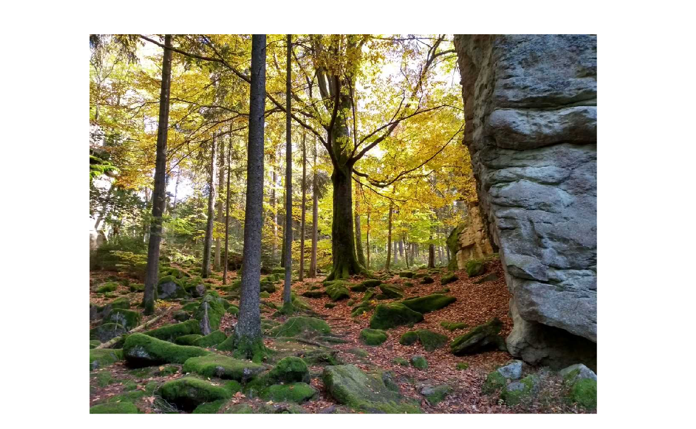
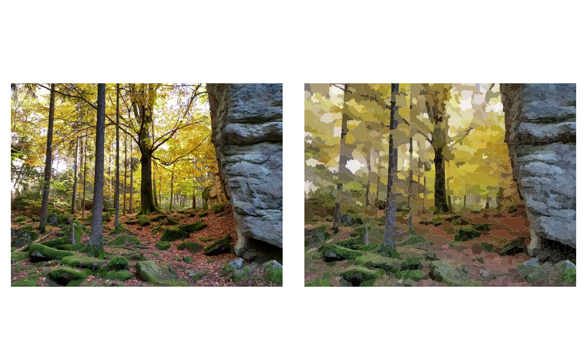

painting
painting.RmdMake a paining from a photo
The package comes with a few example image which can be used for exploration. All the included images have been converted to an object of class stars.
library(stars)
#> Loading required package: abind
#> Loading required package: sf
#> Linking to GEOS 3.9.1, GDAL 3.3.2, PROJ 7.2.1
library(sf)
library(aRts)
data(autumn)
class(autumn)
#> [1] "stars"
autumn
#> stars object with 3 dimensions and 1 attribute
#> attribute(s), summary of first 1e+05 cells:
#> Min. 1st Qu. Median Mean 3rd Qu. Max.
#> Autumn forest 0 75 125 139.4711 207 255
#> dimension(s):
#> from to offset delta refsys point values x/y
#> x 1 1200 0 1 ETRS89-extended / LAEA Eu... NA NULL [x]
#> y 1 900 900 -1 ETRS89-extended / LAEA Eu... NA NULL [y]
#> band 1 3 NA NA NA NA NULLAs you can see, the image has three dimensions (1200, 900, 3) and also has a CRS assigned (EPSG:3035). Now, this does not make sense for a photo but is just make it work.
Create a painting using the default settings.
plot(autumn, rgb = 1:3, main = "", reset = FALSE, useRaster = TRUE)
autumn_paint = painting(autumn)
autumn_paint
#> Simple feature collection with 1425 features and 1 field
#> Geometry type: MULTIPOLYGON
#> Dimension: XY
#> Bounding box: xmin: 0 ymin: 0 xmax: 1200 ymax: 900
#> Projected CRS: ETRS89-extended / LAEA Europe
#> First 10 features:
#> col geometry
#> 1 #80776E MULTIPOLYGON (((0 900, 0 86...
#> 2 #C7BEB0 MULTIPOLYGON (((10 869, 12 ...
#> 3 #CAC386 MULTIPOLYGON (((0 835, 0 78...
#> 4 #B5A562 MULTIPOLYGON (((3 787, 7 78...
#> 5 #9B8C49 MULTIPOLYGON (((15 723, 19 ...
#> 6 #DFD5CB MULTIPOLYGON (((0 688, 0 66...
#> 7 #958D78 MULTIPOLYGON (((19 675, 24 ...
#> 8 #81744F MULTIPOLYGON (((33 648, 36 ...
#> 9 #666529 MULTIPOLYGON (((0 608, 0 59...
#> 10 #868556 MULTIPOLYGON (((3 592, 11 5...
class(autumn_paint)
#> [1] "sf_paint" "sf" "data.frame"Plot original image and painting side by side.
par(mfrow = c(1, 2))
plot(autumn, rgb = 1:3, main = "", reset = FALSE, useRaster = TRUE)
plot(autumn_paint)
Save the image to disk.
# plot(sc)
# class(sc)
# jpeg(
# "img/fichtel_sc.jpg"
# , width = dim(img)[1]
# , height = dim(img)[2]
# , units = "px"
# )
# plot(
# sf::st_geometry(sc)
# , border = NA
# , col = sc$col
# )
# dev.off()